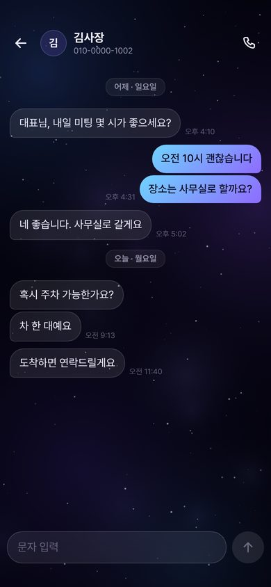
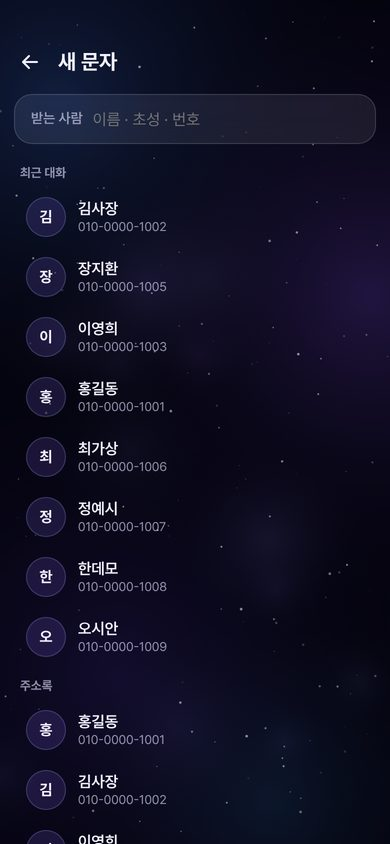
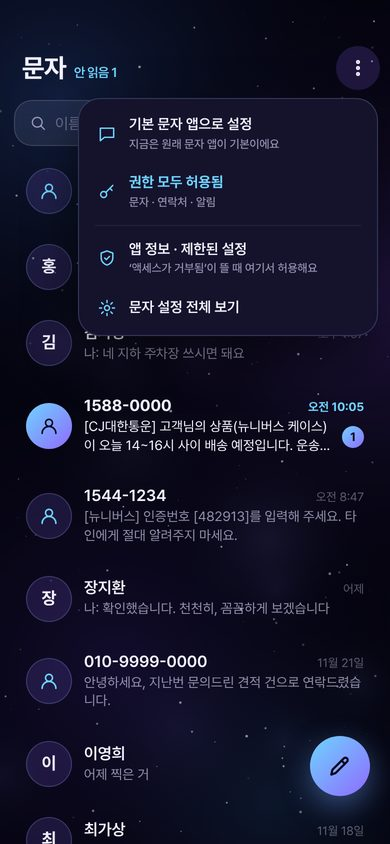
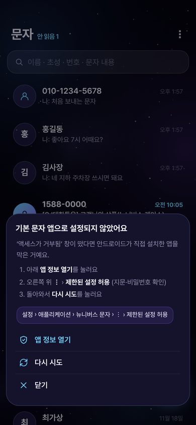

뉴니버스 문자 v8 (시험판)
버전 8-test · 뉴니버스 고정 서명(런처·전화와 같은 서명) · 따로 까는 앱 · 인터넷 권한 없음
내려받기 · 뉴니버스 문자 v8 (약 0.17MB)
v8에서 고친 점 · 받는 순간 자동 처리 · 알림이 안 뜨는데 “성공”이라던 문제
- 344자 문자는 잘린 것이 아니라 병원 예약 문자였고, 날짜(2026-10-31)가 이미 지나서 건너뛴 게 맞아요. 다만 이유가
parse:other로 뭉뚱그려 나왔어요. 이제 parse:past(이미 지난 일정) · parse:no-date · parse:deadline-only · parse:label-found-no-date(‘일시’는 있는데 날짜가 없음) · parse:no-datetime-line 으로 나눠 보여 줘요. ‘정신건강의학과’ 같은 병원 이름도 병원으로 알아봐요.
- 다시 읽기는 이제 최근 문자 10통(SMS+MMS)을 훑어서, 한 통마다 받은 때 · 종류 · 글자 수 · 읽기 단계 · 장문 조각(종류:글자 수) · ‘일시/장소’ 이름표 유무를 한 줄씩 보여 줘요(본문·번호는 저장 안 해요). 그중 가장 최근의 앞으로 올 일정을 달력 처리해요.
- 장문은 모든 글 조각을 순서대로 이어 붙여요(받을 때도, 다시 읽을 때도). 조각 종류에
; charset=…가 붙은 것, 글이 파일(_data)에 있는 것, 조각 글자셋(EUC-KR 등)도 읽어요. 설정에 마지막으로 받은 장문 구성(조각 수 · 종류:글자 수)이 보여요.
- 받는 순간 자동 처리: 장문을 받아 저장한 바로 뒤(알림·런처 신호보다 먼저, 이미 저장돼 있던 문자여도) 달력 처리를 돌려요. 설정 › 달력 등록 기록에 자동 처리 (받는 순간) 줄이 새로 생겨요: 어디서(SMS/MMS) · 글자 수 · 읽기 단계 · 결과 · 멈춘 곳. ‘다시 읽기’ 기록과 따로예요.
- 알림이 정말 떴을 때만 “알림 떴어요”라고 해요. 안 뜨면 이유를 나눠서 보여 줘요: 알림 권한 없음 · 이 앱 알림이 꺼짐 · ‘달력에 넣을까요?’ 알림 종류가 꺼짐 · 보냈지만 떠 있지 않음. 알림 종류는 새 채널(중요도 높음)로 바꿨어요.
- 알림을 못 띄우면 앱 안 카드(목록 맨 위와 설정)로 대신 물어요: [넣기] [아니요]와 [알림 설정 열기].
v7에서 고친 점 · ‘다시 읽기’가 아무 일도 안 하는 것처럼 보이던 문제
- v6에서 다시 읽기를 눌러도 화면이 그대로였고 예전(v5) 기록이 계속 보였어요. v7은 누르는 순간 “마지막 문자를 읽는 중…”을 보여 주고, 읽기는 화면이 멈추지 않게 따로 돌려요. 10초 안에 응답이 없으면 그렇게 알려 줘요.
- 설정 › 달력 등록 기록에 매번 새 기록이 남아요: 요청한 때, 찾은 문자(SMS/MMS · 받은 때 · 글자 수 — 내용·번호는 저장 안 해요), 확인한 문자함(받은 SMS·MMS 몇 통), 일정 읽기 단계(
parse:ok, parse:no-date, parse:deadline-only, parse:no-datetime-line …), 달력 넣기 결과.
- 기록이 예전 버전이 남긴 것이면 그렇게 적고, v7 기록이 없으면 “v7 기록 없음”이라고 보여 줘요. 읽다가 멈추거나 오류가 나면 어느 단계에서 멈췄는지(SMS 읽기 / MMS 읽기 / 일정 읽기 …)와 오류 이름을 보여 줘요.
- 학교 문자는 보낸 번호가 주소록에 없어도 “달력에 넣을까요?”로 물어요(자동으로는 넣지 않아요). 다시 읽기에서는 보낸 곳을 못 믿는 문자도 자동이 아니라 묻는 알림으로 시험해 줘요.
- 아주 긴 문자(수만 자)를 읽다가 오래 걸리던 것을 고쳤어요(5000자까지만 읽고 공백은 하나로). 글이 파일로 저장된 장문도 읽어요. 달력 권한이 없으면 “자동 넣기 꺼짐”이 아니라 “달력 권한 없음”으로 말해요.
v6에서 고친 점 · 실제 폰에서 온 글자 모양 읽기
- v5는 실제 폰에서 온 학교 장문을 일정으로 읽지 못했어요. 폰이 보내는 글자는 겉보기와 달리 특수 공백(NBSP 등), 전각 글자(：～０-９), 다른 동그라미(ㅇ ⚬ ◯), 줄바꿈 없는 한 줄 같은 모양이 섞여 있을 수 있는데, 이전 규칙은 보통 공백과 ‘○’만 알아봤어요.
- 이제 글을 읽기 전에 줄바꿈·모든 유니코드 공백·0폭 글자·전각 글자·물결표·동그라미를 한 모양으로 맞춰요. ‘일시’ 줄에 날짜가 있으면 되고(2026. 11. 27. / 11월 27일 / 11/27), 시각은 16:00 · 오후 4시 · 따로 적힌 시간: 줄 모두 읽어요. 시각이 없으면 하루 종일 일정으로 넣어요.
- 설정 › 달력 등록 기록에 어느 단계에서 막혔는지가 나와요:
parse:no-date(날짜 없음) · parse:deadline-only(마감·신청 기간 날짜뿐) · parse:no-datetime-line(일시 줄이 없음) · parse:past(이미 지난 일정). 본문과 번호는 남기지 않아요.
- 시험용 마지막 문자 다시 읽기 단추: 가장 최근에 받은, 날짜가 있는 문자로 달력 단계를 다시 돌려요. 문자를 다시 보내지 않아도 돼요.
v5에서 고친 점 · 학교·행사 문자가 달력에 안 들어가던 문제
- 왜 안 들어갔나: ① 예전 규칙은 “예약 확정” 같은 말이 있는 문자만 일정으로 봤어요. 학교 안내문(“○ 일시: …”)은 일정으로 읽지 못했어요. ② “2026. 11. 27.(금) 16:00”처럼 날짜 끝에 점이 찍힌 모양에서 시각을 못 읽었어요. ③ 학교는 믿을 수 있는 보낸 곳으로 치지 않았어요. ④ 런처 안내로 달력 권한만 허용하고 앱 안에서 ‘켜기’를 누르지 않으면, 권한이 있어도 자동 넣기가 꺼진 채였어요. 이제는 끈 적이 없고 권한이 있으면 켜진 것으로 봐요.
- 읽는 법: ○ 일시: 줄을 일정 시각으로, ○ 장소: 줄을 장소로, [학교 이름]과 ○ 주제: 줄을 제목으로 써요. 신청 기간이나 “11월 26일(목)까지” 같은 마감 날짜는 일정으로 쓰지 않아요.
- 믿는 보낸 곳: 학교·학원·교육청 이름표([길주중학교])가 있고, 보낸 번호가 주소록에 있거나 일반 전화(0xx)면 믿어요. 병원·교육청·보건소는 그대로 믿어요.
- 신청·모집 안내(신청, 모집, 선착순, 폼 …)는 마음대로 넣지 않고 “달력에 넣을까요?” 알림으로 물어요(넣기 / 아니요). 예약 확정 같은 건 지금처럼 자동으로 넣고 취소 단추가 와요.
- 달력 앱이 없거나 달력에 쓰지 못하면 알림으로 알려요(없을 때는 한 번만). 설정에 달력 등록 기록이 생겼어요: 마지막 일정 후보 문자 시각, 시도 / 건너뜀(이유) / 성공 / 실패(이유), 자동 넣기 켜짐, 달력 권한. 본문과 번호는 남기지 않아요.
v4에서 새로 된 것 · 장문(LMS)·사진 문자 받기
- 병원·택배·카드 문자처럼 긴 문자(장문, LMS)와 사진 문자(MMS)를 기본 문자 앱일 때 통신사에서 내려받아 저장해요. 예전에는 ‘사진·장문 문자가 왔어요 — 아직 받지 못해요’ 알림만 떴어요.
- 대화 화면에서 장문은 제목과 글로, 사진은 작은 사진으로 보여요. 짧은 문자와 시간 순서대로 섞여 나와요. 검색도 장문 글까지 찾아요.
- 장문 속 병원 예약·택배·카드·인증번호도 런처 홈 카드와 달력 자동 넣기에 쓰여요.
- 내려받지 못하면 ‘장문을 받지 못했어요’ 알림이 떠요. 알림의 다시 받기나 설정의 장문·사진(MMS) 받기 기록 › 다시 받기를 누르면 돼요. 잠깐 끊긴 거면 한 번은 저절로 다시 받아요.
- 설정에 장문·사진(MMS) 받기 기록이 생겼어요. 마지막 도착 신호 시각, 내려받기 결과·오류 번호, 저장 여부, 통신사에 받았다고 알렸는지, 못 받은 장문 수가 보여요. 본문과 번호는 남기지 않아요.
- 사진·장문 보내기는 아직 안 돼요. 긴 글은 지금처럼 여러 개의 문자로 나눠 보내요.
v3에서 고친 점
- 기본 문자 앱일 때 받은 문자를 폰 저장소에 더 단단히 저장해요. 저장이 안 되면 한 번 더 시도하고, 그래도 안 되면 ‘문자를 저장하지 못했어요’라고 알려 줘요(예전에는 알림만 뜨고 목록이 비어 있을 수 있었어요).
- 긴 문자는 여러 조각으로 와도 한 통으로 이어 넣어요.
- 목록을 읽지 못하면 ‘아직 문자가 없어요’가 아니라 ‘문자 목록을 읽지 못했어요’가 나와요.
- 설정에 받은 문자 저장 기록이 있어요. 마지막으로 받은 시각, 저장 결과, 받은 편지함 개수, 기본 앱·권한, 런처가 마지막으로 조회한 기록을 볼 수 있어요. 문자 본문과 번호는 남기지 않아요.
홈 카드가 안 보일 때
문자 앱 목록에 문자가 있는데 우주 홈에 카드가 없다면, 먼저 이 앱의 ⋮ › 문자 설정 전체 보기 › 받은 문자 저장 기록에서 ‘런처의 마지막 조회’를 봐 주세요.
홈 카드는 런처 설정의 「문자 속 할 일 카드」를 켜야 떠요(처음 한 번 ‘켜기’를 눌러요). 켜져 있어도, 우주에 저절로 뜨는 건 오늘·내일 택배·예약과 방금 온 인증번호뿐이에요(최대 2장). 며칠 뒤 병원 예약은 홈 입력창에 「병원 예약 언제야」라고 치면 나와요. 짧은 일상 문자(안녕, 테스트)는 카드가 되지 않아요.
v2부터 있던 것 · 런처 카드 · 달력 자동 넣기
- 뉴니버스 런처의 「문자 속 할 일 카드」(택배·병원 예약·카드 결제·인증번호)는 이 앱이 기본 문자 앱일 때 이 앱이 넘겨 주는 문자로 만들어요. 런처는 문자 권한이 없고, 같은 서명 앱끼리만 쓸 수 있는 통로(서명 수준 권한)로 받아요.
- 문자 속 일정을 달력에 자동으로 넣기: 병원·공공기관 예약과 택배 도착 예정(내일 이후) 문자를 ‘뉴니버스’ 전용 달력에만 넣어요. 설정에서 끄거나 지울 수 있어요.
- 안전: 주소록에 있는 사람, 또는 병원·택배·공공기관처럼 분명한 곳의 문자만 넣어요. 광고 문자와 수상한 링크 문자는 건너뛰어요.
들어간 것
- 대화 목록: 사람마다 마지막 문자 한 줄, 안 읽은 문자 수, 주소록 이름. ‘[Web발신]’ 꼬리표는 목록에서 숨겨요.
- 목록 검색: 이름 · 초성(ㅈㅈㅎ) · 번호 · 문자 내용.
- 대화 화면: 말풍선, 보내기, 길게 누르면 복사, 실패하면 다시 보내기, 전화 단추.
- 새 문자: 오른쪽 아래 연필.
- 새 문자 알림 (잠금 화면에는 ‘새 문자’만 보이고 내용은 숨김).
- 사진·장문 문자는 받기와 보기가 돼요(v4). 설정은 목록 오른쪽 위 ⋮ 안에 있어요.
아직 안 되는 것 (다음 판): 사진 · 장문(MMS) 문자 보내기. 받기는 v4부터 돼요. 장문 받기는 통신사 MMS 접속(모바일 데이터 망)이 필요해서, 와이파이만 켜져 있고 모바일 데이터가 막혀 있으면 못 받을 수 있어요.
1. 설치하기
- Play 프로텍트 검사 잠시 끄기: Play 스토어 → 프로필 사진 → Play 프로텍트 → 톱니바퀴 → ‘Play 프로텍트로 앱 검사’ 끄기.
- 이 폰의 크롬에서 위 내려받기 → 내 파일 › 다운로드 › newniverse-sms-v8-test.apk → (출처 허용) → 설치(이미 v7이 있으면 덮어 깔아요. 문자는 그대로예요).
- 설치가 끝나면 Play 프로텍트 검사를 다시 켜기.
2. 처음 켜기 (권한)
- 앱 목록에서 뉴니버스 문자를 열면 권한 창이 떠요: SMS, 연락처, 알림을 모두 허용.
- SMS 허용 창이 안 뜨거나 ‘제한된 설정’ 창이 뜨면, 앱이 띄우는 안내에서 앱 정보 열기 → 오른쪽 위 ⋮ → 제한된 설정 허용 → 돌아와서 다시 시도.
설정 › 애플리케이션 › 뉴니버스 문자 › ⋮ › 제한된 설정 허용
3. 기본 문자 앱 지정 (런처 문자 카드·달력 자동 넣기에 필요)
목록 ⋮ › 기본 문자 앱으로 설정. 시스템 창에서 뉴니버스 문자를 고르면 돼요.
되돌리기: 설정 › 애플리케이션 › 기본 앱 선택 › SMS 앱 › 메시지.
4. 저장 기록 보는 법
뉴니버스 문자 목록 오른쪽 위
⋮ ›
문자 설정 전체 보기 → 아래쪽
받은 문자 저장 기록 (시험).
- 저장 결과가 ‘저장됨’이면 받은 문자가 폰에 들어간 거예요. ‘저장 실패’면 오류 종류만 보여 줘요.
- 런처의 마지막 조회가 ‘아직 물어보지 않았어요’이면, 홈을 한 번 연 뒤 다시 봐 주세요. 그래도 없으면 런처가 이 앱에 닿지 못한 거예요(설정에서 카드를 켜는지, 런처를 한 번 덮어 까는지 봐 주세요).
- 조회가 ‘도착’이고 ‘넘긴 문자 0통’이면, 택배·예약·카드·인증 문구가 있는 문자만 넘깁니다.
화면






화면의 이름과 번호는 모두 예시예요. 문자 내용은 폰 밖으로 나가지 않아요(인터넷 권한 없음).